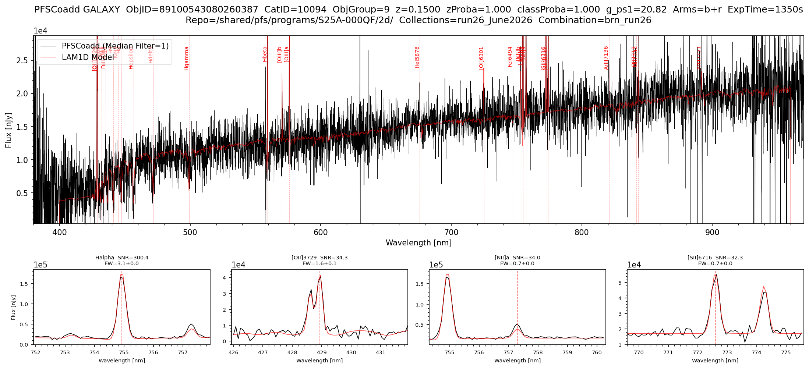

pfsCoadd Spectrum + LAM 1D Model
The following script uses the objid to plot the pfsCoadd spectrum of a single object overlaid with the LAM 1D best-fit model, and marks detected spectral lines. Alternatively, It can use the {collections}_all_lam1d.csv file produced by the object table code in the pfsCoZCandidates section to search for objects by redshift/velocty or browse by index (csv is not required for a simple objid search) . Run that code once before using this plotter if using the second selection method.
The code supports three modes of object selection:
- By
objid— plots that object directly, auto-detecting its class usingButler(object table csv not required). - By class + redshift/velocity — finds the object in the CSV closest to a target redshift (GALAXY/QSO) or velocity (STAR) provided.
- By class +
browse_index— steps through all objects of a given class in the CSV sorted by descending redshift/velocity.
For a given object, the code fetches the pfsCoadd spectrum and the LAM 1D model fit via Butler. The main plot shows the observed spectrum (black) and the LAM 1D model fit (red) with detected line positions marked. For GALAXY and QSO objects, up to four zoomed sub-panels show the top-ranked lines by SNR, with the line name, SNR, and equivalent width displayed. A summary table of the top 10 lines by SNR is also printed to the terminal.
import numpy as np
import pandas as pd
import matplotlib.pyplot as plt
from scipy import ndimage
from lsst.daf.butler import Butler
# ==== USER-DEFINED PARAMETERS ====
repo = "/shared/pfs/programs/S25A-000QF/2d/" # path to the 2d DRP repository
collections = "run26_June2026" # collection name
collections_lam1d = "run26_June2026/lam1d_modified" # LAM1D collection name
combination = "brn_run26" # Set to the combination you want to plot
# CLASS PARAMETERS
# Note: Set to None if you do not want to use a particular parameter
class_name = None # 'GALAXY', 'QSO' or 'STAR'
browse_index = None # 0 = highest redshift/velocity, increment to browse
search_redshift = None # GALAXY/QSO: find closest object to this redshift, overrides browse_index
search_velocity_kms = None # STAR: find closest object to this velocity [km/s], overrides browse_index
objid = 89100543080260387 # if set, overrides everything else and plots target spectrum directly
# PLOT PARAMETERS
MEDIAN_FILTER_SIZE = 1 # 1 = no filtering, increment for smoothing as desired
arms = ['b', 'r'] # options: 'b', 'r', 'n' or any combination of arms to plot
# ==== HELPERS ====
# _get_zinfo: extracts class, redshift/velocity, redshift probability, and class probability
# directly from a zCand object via Butler
# _get_mag: looks up the best available magnitude from pfsConfig for a given objId
# using a visit from the pfsCoadd observations list
def _get_zinfo(zCand):
cname = zCand.classification.name
z_key = {"STAR": "velocity", "GALAXY": "redshift", "QSO": "redshift"}[cname]
params = zCand.get_classified_parameters()
z_val = float(params[z_key])
z_proba = float(params.get('templateProba' if cname == 'STAR' else 'redshiftProba', float('nan')))
c_proba = next((float(v) for k, v in zCand.classification.probabilities.items() if k.upper() == cname), float('nan'))
return cname, z_val, z_proba, c_proba
def _get_mag(butler, objid, visits):
for visit in visits:
pfsConf = butler.get('pfsConfig', visit=int(visit))
idx = np.where(pfsConf.objId == np.int64(objid))[0]
if len(idx) == 0:
continue
i = idx[0]
filters = list(pfsConf.filterNames[i])
total = np.array(list(pfsConf.totalFlux[i]), dtype=float)
psf = np.array(list(pfsConf.psfFlux[i]), dtype=float)
flux = np.where((total > 0) & np.isfinite(total), total, psf)
mags = np.where(flux > 0, -2.5 * np.log10(flux) + 31.4, np.nan)
j = next((k for k, m in enumerate(mags) if np.isfinite(m)), None)
return f"{filters[j]}={mags[j]:.2f}" if j is not None else "mag=N/A"
return "mag=N/A"
# ==== PFSCOADD+LAM1D PLOTTING FUNCTION ====
def plot_pfscoadd_lam1d(
repo, collections, collections_lam1d, combination,
class_name, browse_index, search_redshift, search_velocity_kms, objid,
MEDIAN_FILTER_SIZE, arms,
):
ARM_RANGES = {
'b': (380, 650),
'r': (630, 970),
'n': (940, 1260),
}
butler = Butler(repo, collections=[collections, collections_lam1d])
cat_ids = sorted(set(ref.dataId['cat_id'] for ref in butler.registry.queryDatasets('pfsCoadd')))
mag_str = None
# ==== FIND OBJECT SPECIFICS ====
if objid is not None:
# Fast path: use objectGroupMap + Butler directly, no CSV needed
objid = int(objid)
for cat_id in cat_ids:
ogm = butler.get("objectGroupMap", combination=combination, cat_id=cat_id)
try:
obj_group = ogm[objid]
break
except KeyError:
continue
else:
raise ValueError(f"objId {objid} not found in any objectGroupMap")
coZCands = butler.get('pfsCoZCandidates', combination=combination, cat_id=cat_id, obj_group=obj_group)
zCand = coZCands[objid]
class_name, redshift_value, z_proba, c_proba = _get_zinfo(zCand)
z_proba_str = f"{z_proba:.3f}" if np.isfinite(z_proba) else "N/A"
class_proba_str = f"{c_proba:.3f}" if np.isfinite(c_proba) else "N/A"
print(f"Auto-detected class: {class_name} for objId={objid}")
elif search_redshift is not None or search_velocity_kms is not None:
# CSV path: fast browse via pre-built table
df = pd.read_csv(f"{collections}_all_lam1d.csv")
df['objId'] = df['objId'].astype(np.int64)
df = df[df['combination'] == combination]
df = df[df['class'].str.upper() == class_name.upper()].reset_index(drop=True)
redshift_column = {"GALAXY": "redshift_gal", "QSO": "redshift_qso", "STAR": "velocity_star"}[class_name.upper()]
if class_name.upper() == "STAR":
if search_velocity_kms is None:
raise ValueError("class_name is STAR but search_velocity_kms is not set")
target_val = search_velocity_kms
label_str = f"velocity={search_velocity_kms} km/s"
else:
if search_redshift is None:
raise ValueError(f"class_name is {class_name} but search_redshift is not set")
target_val = search_redshift
label_str = f"z={search_redshift}"
closest_idx = (df[redshift_column] - target_val).abs().idxmin()
row = df.loc[closest_idx]
objid = int(row['objId'])
cat_id = int(row['catid'])
obj_group = int(row['obj_group'])
redshift_value = row[redshift_column]
found_val = redshift_value if class_name.upper() == "STAR" else redshift_value
found_unit = "km/s" if class_name.upper() == "STAR" else ""
print(f"Target {label_str} → closest object at {redshift_column}={found_val:.1f} {found_unit} (idx={closest_idx})")
z_proba_col = {"GALAXY": "redshiftProba_gal", "QSO": "redshiftProba_qso", "STAR": "templateProba_star"}[class_name.upper()]
c_proba_col = {"GALAXY": "probaGalaxy", "QSO": "probaQSO", "STAR": "probaStar"}[class_name.upper()]
z_proba_str = f"{row[z_proba_col]:.3f}" if z_proba_col in row.index and pd.notna(row[z_proba_col]) else "N/A"
class_proba_str = f"{row[c_proba_col]:.3f}" if c_proba_col in row.index and pd.notna(row[c_proba_col]) else "N/A"
mag_cols = [c for c in row.index if c.startswith('mag_')]
best_mag_col = next((c for c in mag_cols if pd.notna(row[c])), None)
mag_str = f"{best_mag_col.replace('mag_', '')}={row[best_mag_col]:.2f}" if best_mag_col else "mag=N/A"
coZCands = butler.get('pfsCoZCandidates', combination=combination, cat_id=cat_id, obj_group=obj_group)
zCand = coZCands[objid]
else:
# CSV path: fast browse via pre-built table
df = pd.read_csv(f"{collections}_all_lam1d.csv")
df['objId'] = df['objId'].astype(np.int64)
df = df[df['combination'] == combination]
df = df[df['class'].str.upper() == class_name.upper()].reset_index(drop=True)
redshift_column = {"GALAXY": "redshift_gal", "QSO": "redshift_qso", "STAR": "velocity_star"}[class_name.upper()]
df_sorted = df.sort_values(redshift_column, ascending=False).reset_index(drop=True)
print(f"Loaded {len(df_sorted)} {class_name} objects from {collections}_all_lam1d.csv")
print(f"Sorted by {redshift_column} descending | Showing index {browse_index} of {len(df_sorted)-1}")
row = df_sorted.iloc[browse_index]
objid = int(row['objId'])
cat_id = int(row['catid'])
obj_group = int(row['obj_group'])
redshift_value = row[redshift_column]
z_proba_col = {"GALAXY": "redshiftProba_gal", "QSO": "redshiftProba_qso", "STAR": "templateProba_star"}[class_name.upper()]
c_proba_col = {"GALAXY": "probaGalaxy", "QSO": "probaQSO", "STAR": "probaStar"}[class_name.upper()]
z_proba_str = f"{row[z_proba_col]:.3f}" if z_proba_col in row.index and pd.notna(row[z_proba_col]) else "N/A"
class_proba_str = f"{row[c_proba_col]:.3f}" if c_proba_col in row.index and pd.notna(row[c_proba_col]) else "N/A"
mag_cols = [c for c in row.index if c.startswith('mag_')]
best_mag_col = next((c for c in mag_cols if pd.notna(row[c])), None)
mag_str = f"{best_mag_col.replace('mag_', '')}={row[best_mag_col]:.2f}" if best_mag_col else "mag=N/A"
coZCands = butler.get('pfsCoZCandidates', combination=combination, cat_id=cat_id, obj_group=obj_group)
zCand = coZCands[objid]
# ==== SHARED LABELS ====
redshift_label = f"velocity={redshift_value:.1f} km/s" if class_name.upper() == "STAR" else f"z={redshift_value:.4f}"
# ==== LOAD pfsCoadd ====
print(f"Loading pfsCoadd for catid={cat_id} obj_group={obj_group}...")
pfscoadd = butler.get("pfsCoadd", combination=combination, cat_id=cat_id,
instrument='PFS', obj_group=obj_group)
pfsobject = pfscoadd[int(objid)]
# ==== EXPOSURE TIME ====
unique_visits, idx = np.unique(pfsobject.observations.visit, return_index=True)
total_exptime = pfsobject.observations.expTime[idx].sum()
# ==== MAGNITUDE (objid path: look up from pfsConfig; browse/search: already set from CSV) ====
if mag_str is None:
mag_str = _get_mag(butler, objid, unique_visits)
print(f"ObjId={objid} CatID={cat_id} ObjGroup={obj_group} {redshift_label} {mag_str} zProba={z_proba_str} classProba={class_proba_str}")
# ==== LOAD LAM1D MODEL AND SPECTRAL LINES ====
top4 = None
if class_name.upper() == "STAR":
print("STAR object — LAM1D model fit uses stellar templates (no emission lines)")
model = zCand.get_classified_model()
line_names = []
line_waves = []
else:
model = zCand.get_classified_model()
lines = zCand.qso.lines if class_name.upper() == "QSO" else zCand.galaxy.lines
if lines is not None:
line_names = lines['lineName'].tolist()
line_waves = lines['lineWave'].tolist()
lines_df = lines.to_pandas()
lines_df['SNR'] = lines_df['lineFlux'] / lines_df['lineFluxError']
top10 = lines_df.nlargest(10, 'SNR')
top4 = top10.head(4)
print(f"\n---- Top 10 Lines by SNR (global z={redshift_value:.4f}) ----")
print(f" {'Line':<12} {'SNR':>6} {'EW':>8} {'EW_err':>8} {'lineZ':>7} {'dz':>7} {'sigma':>6}")
print(f" {'----':<12} {'---':>6} {'--':>8} {'------':>8} {'-----':>7} {'--':>7} {'-----':>6}")
for _, r in top10.iterrows():
dz = r['lineZ'] - redshift_value
print(f" {r['lineName']:<12} {r['SNR']:>6.1f} {r['lineEW']:>8.1f} {r['lineEWError']:>8.1f} {r['lineZ']:>7.4f} {dz:>+7.4f} {r['lineSigma']:>6.2f}")
print()
else:
line_names = []
line_waves = []
print("No lines table available.\n")
# ==== ARM MASK ====
arm_mask = np.zeros(len(pfsobject.wavelength), dtype=bool)
for arm in arms:
lo, hi = ARM_RANGES[arm]
arm_mask |= (pfsobject.wavelength >= lo) & (pfsobject.wavelength <= hi)
xlim_lo = min(ARM_RANGES[arm][0] for arm in arms)
xlim_hi = max(ARM_RANGES[arm][1] for arm in arms)
# ==== MASK BAD PIXELS ====
pixels_bad = (pfsobject.mask & pfsobject.flags.get('BAD', 'CR', 'SAT', 'NO_DATA')) != 0
pixels_good = arm_mask & ~pixels_bad
# ==== YLIM ====
flux_in_range = pfsobject.flux[pixels_good]
p2, p98 = np.nanpercentile(flux_in_range, [2, 98])
span = p98 - p2
ylim_lower = p2 - 0.05 * span
ylim_upper = p98 + 0.15 * span
# ==== PLOT ====
has_zoom = top4 is not None and len(top4) > 0
n_zoom = len(top4) if has_zoom else 0
if has_zoom:
fig = plt.figure(figsize=(15, 7))
gs = fig.add_gridspec(2, 4, height_ratios=[2.5, 1],
top=0.88, bottom=0.08, left=0.05, right=0.98,
hspace=0.35, wspace=0.12)
ax_main = fig.add_subplot(gs[0, :])
else:
fig, ax_main = plt.subplots(figsize=(12, 5))
fig.subplots_adjust(top=0.88, bottom=0.1, left=0.07, right=0.97)
ax_main.plot(pfsobject.wavelength[pixels_good],
ndimage.median_filter(pfsobject.flux[pixels_good], size=MEDIAN_FILTER_SIZE),
linewidth=0.5, color='black', label=f'PFSCoadd (Median Filter={MEDIAN_FILTER_SIZE})')
ax_main.plot(pfsobject.wavelength[arm_mask],
ndimage.median_filter(model[arm_mask], size=MEDIAN_FILTER_SIZE),
linewidth=0.5, color='red',
label='LAM1D Stellar Template' if class_name.upper() == "STAR" else 'LAM1D Model',
alpha=0.7)
ax_main.set_xlim([xlim_lo, xlim_hi])
ax_main.set_ylim([ylim_lower, ylim_upper])
ax_main.ticklabel_format(axis='y', style='sci', scilimits=(0, 0))
# ==== EMISSION LINE MARKERS ====
x_lo, x_hi = ax_main.get_xlim()
y_top = ax_main.get_ylim()[1]
for lw, ln in zip(line_waves, line_names):
if not (x_lo <= lw <= x_hi):
continue
ax_main.axvline(x=lw, color='red', linestyle='--', alpha=0.3, linewidth=0.5)
ax_main.text(lw, y_top * 0.95, ln, rotation=90,
verticalalignment='top', horizontalalignment='right',
fontsize=7, color='red')
arms_label = '+'.join(arms)
ax_main.set_title(f'PFSCoadd {class_name} ObjID={objid} CatID={cat_id} ObjGroup={obj_group} {redshift_label} zProba={z_proba_str} classProba={class_proba_str} {mag_str} Arms={arms_label} ExpTime={total_exptime:.0f}s\n'
f'Repo={repo} Collections={collections} Combination={combination}')
ax_main.legend(loc='upper left', fancybox=True, framealpha=0.5)
ax_main.minorticks_on()
ax_main.set_xlabel('Wavelength [nm]')
ax_main.set_ylabel('Flux [nJy]')
# ==== ZOOM SUBPLOTS ====
if has_zoom:
for i in range(4):
ax = fig.add_subplot(gs[1, i])
if i < n_zoom:
r = top4.iloc[i]
lw_ctr = r['lineWave']
if class_name.upper() == "QSO":
hw = np.clip(round(r['lineSigma'] * 12), 6, 80)
else:
hw = np.clip(round(r['lineSigma'] * 6), 3, 40)
w_lo = lw_ctr - hw
w_hi = lw_ctr + hw
zmask = pixels_good & (pfsobject.wavelength >= w_lo) & (pfsobject.wavelength <= w_hi)
zarm = (pfsobject.wavelength >= w_lo) & (pfsobject.wavelength <= w_hi)
if zmask.sum() > 0:
ax.plot(pfsobject.wavelength[zmask],
ndimage.median_filter(pfsobject.flux[zmask], size=MEDIAN_FILTER_SIZE),
linewidth=0.8, color='black')
ax.plot(pfsobject.wavelength[zarm],
ndimage.median_filter(model[zarm], size=MEDIAN_FILTER_SIZE),
linewidth=0.8, color='red', alpha=0.7)
zp2, zp98 = np.nanpercentile(pfsobject.flux[zmask], [2, 98])
zspan = zp98 - zp2
ax.set_ylim([zp2 - 0.1 * zspan, zp98 + 0.3 * zspan])
ax.axvline(x=lw_ctr, color='red', linestyle='--', alpha=0.5, linewidth=0.8)
ax.set_xlim([w_lo, w_hi])
ax.set_title(f"{r['lineName']} SNR={r['SNR']:.1f}\nEW={r['lineEW']:.1f}±{r['lineEWError']:.1f}", fontsize=7)
ax.set_xlabel('Wavelength [nm]', fontsize=7)
ax.tick_params(labelsize=7)
ax.ticklabel_format(axis='y', style='sci', scilimits=(0, 0))
ax.minorticks_on()
if i == 0:
ax.set_ylabel('Flux [nJy]', fontsize=7)
else:
ax.set_visible(False)
fig.savefig(f'pfsCoadd_LAM1D_{collections}_{class_name}_{objid}.png', dpi=150, bbox_inches='tight')
plt.show()
# ==== RUN ====
plot_pfscoadd_lam1d(
repo = repo,
collections = collections,
collections_lam1d = collections_lam1d,
combination = combination,
class_name = class_name,
browse_index = browse_index,
search_redshift = search_redshift,
search_velocity_kms = search_velocity_kms,
objid = objid,
MEDIAN_FILTER_SIZE = MEDIAN_FILTER_SIZE,
arms = arms,
)
Output:
Auto-detected class: GALAXY for objId=89100543080260387
Loading pfsCoadd for catid=10094 obj_group=9...
ObjId=89100543080260387 CatID=10094 ObjGroup=9 z=0.1500 g_ps1=20.82 zProba=1.000 classProba=1.000
---- Top 10 Lines by SNR (global z=0.1500) ----
Line SNR EW EW_err lineZ dz sigma
---- --- -- ------ ----- -- -----
Halpha 300.4 3.1 0.0 0.1500 +0.0000 0.14
[OII]3729 34.3 1.6 0.1 0.1500 -0.0000 0.10
[NII]a 34.0 0.7 0.0 0.1500 +0.0000 0.14
[SII]6716 32.3 0.7 0.0 0.1500 +0.0000 0.14
[SII]6731 31.7 0.5 0.0 0.1500 +0.0000 0.14
[OIII]a 31.3 0.6 0.0 0.1500 +0.0000 0.11
[OII]3726 30.6 1.1 0.0 0.1500 -0.0000 0.10
Hbeta 25.6 0.6 0.0 0.1500 -0.0000 0.09
[NII]b 23.5 0.2 0.0 0.1500 +0.0000 0.14
FeII3785 10.2 0.2 0.0 0.1500 -0.0000 0.10
